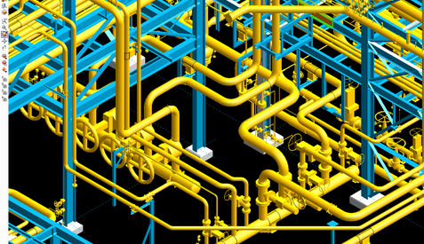

STRUNA: Engineering Dashboard
STRUNA – STRESS/STRUCTURAL NAVIGATOR OR ‘ENGINEERING DASHBOARD’

Introduction
Design of any large industrial process plant is inconceivable without continuous spatial coordination between designers and engineers of three engineering disciplines: Mechanical/Piping, Structural and Electrical. 3D-modelling software employed for the given project serves as the common three-dimensional medium for interdisciplinary coordination. The obvious benefits of such approach have been discussed in multiple publications and would be beyond the topic of the present article.
The new, uncharted area and the main topic of this article is coordination between the engineers of Mechanical-Piping (further called Piping-Stress) and Civil-Structural Disciplines. The present predicament is that although the noted-above engineers create 3D analytical models of remarkable complexity, they still work in virtual isolation and have a chance to employ computer technology for coordination only in a roundabout way i.e. after their designs have been integrated into 3D-CAD environment by designers.
Moreover, the vast amounts of data incorporated within engineer’s models as well as the massive analyses outputs has to be conveyed to the engineer of another discipline only by conservative means of print-outs and manual mark-ups. On the positive note, with the significant progress of engineering analytical software, interdisciplinary coordination of ‘engineering’ 3D models became feasible from technical perspective and modern engineers are geared up for it.
Figure 1. Piping and Structural 3D-CAD Models brought as references into common 3D medium ‘Viewer’ for spatial coordination and clash-detection.
Analytical or ‘Engineering’ 3D Models
It is worth noting that analytical models generated by engineers differ significantly from those created by designers though both types of models are being created to depict the same designs.
The visual difference between first and second figures is apparent: models generated by designers are more realistic – they represent ‘full body’ images of piping components and structural members. Unlike these models an analytical model generated by an engineer is a schematic representation of linear members (as single lines) and joints or nodes (as circles). What is not shown on the graphic screen of an analytical model is the vast multitude of alphanumerical data associated with these members and joints: constraint conditions, member mechanical properties, loads, load cases and load combinations.
This drastic difference is not resulting from software deficiencies nor from the industry traditions; it could be explained solely by the difference of purposes for which the models are generated.
Fig. 2 Structural Analytical Model (STAAD.Pro) of a 5-level Piperack with platforms and galleries.
Fig. 3 Analytical Model (AutoPipe) of a Piping-Stress System stretching for hundreds of meters across the Plant.
For at least two decades Structural engineers and Piping-Stress engineers have been creating relatively complex and detailed 3D models using their respective software: for Structural - STAAD, RISA, S-Frame, and SAP2000 and alike, for Piping-Stress - Caesar, Auto-Pipe and alike (let’s name them further ‘analytical models’). This analytical software became powerful and reliable enough to process hundreds of linear members and node joints whereas the new generation of engineers became comfortable dealing with massive inputs and outputs.
Engineering modeling accuracy and complexity have achieved almost the same level as those of the designer’s 3D modeling. The purpose of the engineering modeling is entirely different – it is repetitive computer analyses (with each optimization step) and further design based on the analyses output. The graphic interface of most CAE programs fits this purpose; unlike 3D-CAD models, the analytical models display the ‘wire-line’ or simplified graphics neglecting elaborate 3D shapes (see Fig. 2 above). While creating analytical model the engineer deliberately omits numerous minute components non-essential for analyses. On another hand, engineers, unlike designers, input vast amount of alphanumerical data related to the visible components: various conditions, loads, load-combinations, restraints and properties alike.
The analytical models created by engineers have been gradually obtaining the same status, the
same permanent value as the 3D models created by designers, namely:
- Analytical models are repeatedly re-analyzed and modified/optimized from the project’s
start
to finish.
- Some of these models may be split between two engineers or transferred from one engineer
to
another within the same group.
- More clients are becoming convinced that analytical models could be effectively reused for
future phases of the same Project. Hence, they request such models as part of the ‘turn-over
package’ along with 2D-drawing, 3D parametric models, material take-off’s, engineering
design briefs, and other ‘electronic deliverables’.
Similarly, for the last two decades the working environment, the efficacy and reliability of the professional software, the approaches, skills and working mentality for engineers and designers underwent such evolution.
Yet, this convergent evolution is incomplete; we can observe the obvious absence of an engineering 3D graphic medium that would enable efficient visual coordination and electronic data exchange among engineers.
STRUNA - the solution
The above-noted 3D medium (further names STRUNA for Stress-Structural Navigator) could be and should be developed as new program independent from the engineering analytical software. This new program should be open to importing the input and output files from the analytical programs, should conveniently display geometry and related alphanumerical information per user’s request, and should transfer and properly incorporate into related input files the data selected by either the structural or the piping-stress user.
Aside of visual interdisciplinary coordination two major functions of STRUNA are to be:
- Transfer of reaction forces from Piping-System(s) support nodes to the relevant points on
supporting structural members
- Transfer of critical displacements from structural output to the properties of the
user-selected piping supports
In addition, the specific needs of engineering users should be addressed by a whole plethora
of utilities.
For structural users these utilities will automate or greatly facilitate the following load
input:
- wind and snow loads on open structure,
- preliminary piping and cable-tray ‘blanket’ loads
- operator platform and cut-walks - dead and life loads
- seismic static-equivalent ‘base shear’ distribution
- collection of load combination sets